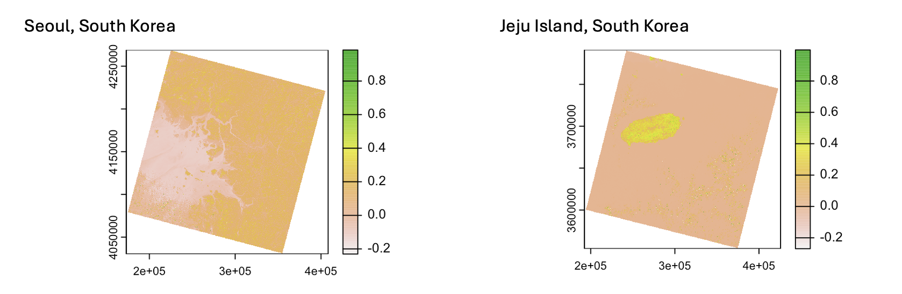
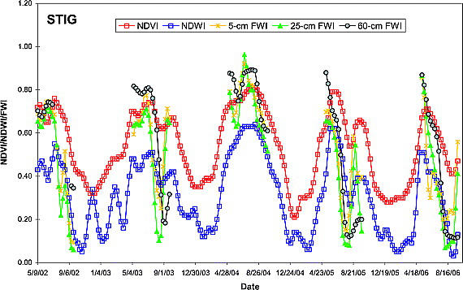

4 Week 3: Corrections and enhancement
4.1 Summary
Remote sensing often requires corrections or sometimes requires enhancement to overcome the flaws of the original image introduced by sensor itself (e.g., angle of viewing)/ landscape (e.g., hilly surface)/ atmosphere (e.g., atmospheric scattering of radiation) etc. Enhancement of imagery also allows better interpretation for spatial analysis e.g., identifying features.
4.1.1 Key Terms: Corrections
Geometric corrections for image distortions introduced by physical factors e.g., sensor/ landscape itself
Ground Control Points (GCPs) from local map or handheld devices needed to match the known points (of the image) to a location-referenced dataset.
Geometric transformation algorithms to obtain RMSE (root-mean-squared-error), the lower the better ~0.5.
More GCPs are required in order to lower the RMSE.
Resample the raster layer.
Atmospheric corrections for image distortions introduced by atmosphere e.g., atmospheric scattering and topographic attenuation
Necessary for measuring biophysical parameters e.g., NDVI (Normalised Difference Vegetation Index).
Relative VS Absolute.
Relative: the use of Dark Object Subtraction (DOS) or Pseudo-invariant Features (PIFs) to normalise relative to different bands within an image OR relative to different dates.
Absolute: requires empirical data e.g., atmospheric model and local atmospheric visibility to scale up surface reflectance.
Orthorectification correction for image distortions introduced by the view angle of the sensor • Requires geometry and DEMs (elevation model).
Consider the effect of solar azimuth and solar zenith.
Solar azimuth: compass angle of the sun at sunrise and sunset
Solar zenith: angle of local zenith and sun (vertical)
Radiometric Calibration for transforming image brightness from Digital Number (DN) to spectral radiance
Sensors only able to capture image brightness and stored as DN.
Calibrated in a lab before launching the sensor.
4.1.2 Key terms: enhancement
Digital Number (DN): in a form of binary integer (bits) that requires transformation, represents the intensities (brightness) of a pixel.
Radiance/ Top of Atmosphere (TOA) radiance: the amount of light that a sensor receives through reflectance from an object, with a unit of watt.
(Surface) Reflectance: property of a material being observed, dependent on light source (requires illuminating source for reflection to take place)./ TOA reflectance: converted from TOA radiance.
Band Ratioing: (for DN values in different bands), to compare DN values in different bands to identify certain features e.g., NDVI for vegetation cover (Normalised Difference Vegetation Index, to be discussed in the applications part).
- Sample equation for obtaining NDVI: \[NDVI= \frac{NIR-Red}{NIR+Red}\]
- Sample work of NDVI from my practical – looking at the differences in NDVI between cities (Seoul) and rural area (Jeju Island) in South Korea.

Principal Component Analysis (PCA): the transformation of original data to a new one for dimensionality reduction, from multi-spectral data to uncorrelated/ smaller dataset.
Texture: captures the spatial distribution of grey values.
Fusion: combining data from different (multiple) sources into one.
4.2 Applications
This week I am going to explore the usefulness of band ratioing in monitoring vegetation drought in Oklahoma Mesonet, the USA, by using NDVI (Normalised Differences Vegetation Index) and NDWI (Normalised Differences Water Index)(Gu et al. 2008). The authors presented temporal analysis of changes in vegetation density and soil moisture (water content in soil) by comparing the changes of NDVI and NWVI across the time series. Changes in NDVI are in line with changes in NDWI as reflected by the same periodic changes in NDVI and NDWI. This implies that the density of vegetation is dependent upon the availability of water supply, which it is true that water is essential for sustaining vegetation growth (He and Dijkstra 2014).

NDVI is useful in revealing the spatial distribution and density of vegetation cover, a higher index reflects a denser vegetation cover. NDVI is also useful for temporal analysis for the changes of vegetation cover over time, a decrease in NDVI indicates a reduction in vegetation and vice versa for an increase in NDVI (Othman et al. 2018). However, the above study shows that NDVI never gone down to 0 throughout the study even NDWI went down drastically in August 2006. This can possibly be explained by 1). plants could be drought resistant 2). plants are able to regulate their water consumption pattern to sustain their growth (Gupta, Rico-Medina, and Ana I. Caño-Delgado 2020).
NDWI is useful in monitoring changes of water content on land or along the coast. NDWI temporal analysis also allows us to understand the moisture content or changes in the extent of water body. If NDWI remains low for a long time such as from December 2005 to April 2006 in the above study, it is more likely that Oklahoma was experiencing drought/ water content remained low at all times. Sample equation for obtaining NDWI is (Gu et al. 2008): \[NDWI= \frac{G-NIR}{G+NIR}\]
4.3 Reflections
I am going to be very honest about my understanding towards corrections before this lecture, which is I literally have no idea that remotely sensed satellite imagery needs corrections. I think that’s because most of the products have already gone through corrections before it is available to the public. I was quite amazed by how much pre-processing that we/ product provider has to gone through before the product is ready for analysis. Although we don’t have to go through the correction part (at most of the time), I think it is quite useful in understanding how those mechanisms work just in case we are having some “raw” data in hand. This enables us to scratch the data from the beginning for analysis, if needed.
As for image enhancement, I really enjoyed the part of “ratioing” – NDVI, NDWI, NDBI etc. I think this is an extension from lecture 1 that we are introduced with different bands in satellite imagery, we are now comparing different bands within a satellite imagery to obtain the information e.g., land cover. How interesting!!! We can obtain information of land cover by just calculating the ratio between bands. Ratioing is very useful in remote sensing in both spatial and temporal sense as changes in indices reveal the changes in land cover e.g., changes in NDVI = changes in the extent of water body. I find it quite easy to understand the concept behind, as long as I am very clear about the meaning of different bands.